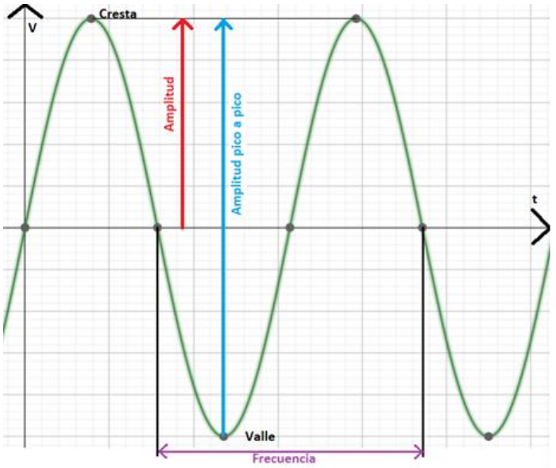

La calidad de la energía es un problea que comenzó en el siglo XIX con las perturbaciones que se generaban por motores, hoy en día, la incorporación de la generación distribuida, las cargas no lineales usadas por los usuarios y los cambios en la industria de la electricidad han hecho que sea un problema prioritario a resolver. La mayoría de los dispositivos electrónicos están diseñados para poder trabajar sin problemas, aunque la electricidad con la que se alimente tenga ciertas perturbaciones, sin embargo, existen dispositivos más sensibles que dependen de la señal de la electricidad con la que se alimenta para poder trabajar adecuadamente, por ello es importante su estudio, ya que, además de poder dañar equipos electrónicos, también puede causar fallas en el sistema eléctrico. Existen una gran cantidad de definiciones de caldiad de la energía, sin embargo, se puede describir como: La magnitud en la que la utilización de la energía perjudica el funcionamiento de un dispositivo eléctrico [1]. Es cuando la energía eléctrica es suministrada a los equipos y dispositivos con las características y condiciones adecuadas que les permita mantener su continuidad sin que se afecte su desempeño ni provoque fallas a sus componentes [2]. Es la precisión de los atributos eléctricos para el funcionamiento óptimo del sistema de potencia [3]. Ausencia de interrupciones, sobre tensiones y deformaciones producidas por armónicas en la red y variaciones de voltaje RMS suministrado a usuario [4]. La calidad del servicio de la energía eléctrica se mide mediante tres parámetros [5]: Continuidad del servicio: se evalúa con índices que están relacionados con la duración y el número de las interrupciones del servicio en un período de tiempo. Calidad de la energía: se valora a partir de parámetros como la amplitud, la frecuencia, la forma de onda y la simetría de las señales de tensión y de corriente. Atención comercial: tiene que ver con todo lo relacionado con la capacidad de atención al cliente y con el suministro de información a los usuarios de energía eléctrica.
Características de la forma de onda La forma de onda senoidal que lleva a los tomacorrientes de los hogares tiene las siguientes características [6]: Amplitud: Se puede definir como la distancia vertical entre una cresta y el punto de equilibrio de la señal medida, también se puede obtener la amplitud de pico a pico que es la medida de la distancia entre una cresta y un valle. Frecuencia: Es el número de repeticiones que tiene un evento en un periodo de tiempo, en las señales eléctricas sería la cantidad de ciclos por segundo (Hertz). Forma de onda: Para la señal eléctrica, la forma de onda es una señal senoidal. Simetría: En los sistemas trifásicos, la simetría se refiere a que los desfases son iguales. En la figura se muestran las caracteristicas descritas anteriormente.  Características de forma de onda senoidal